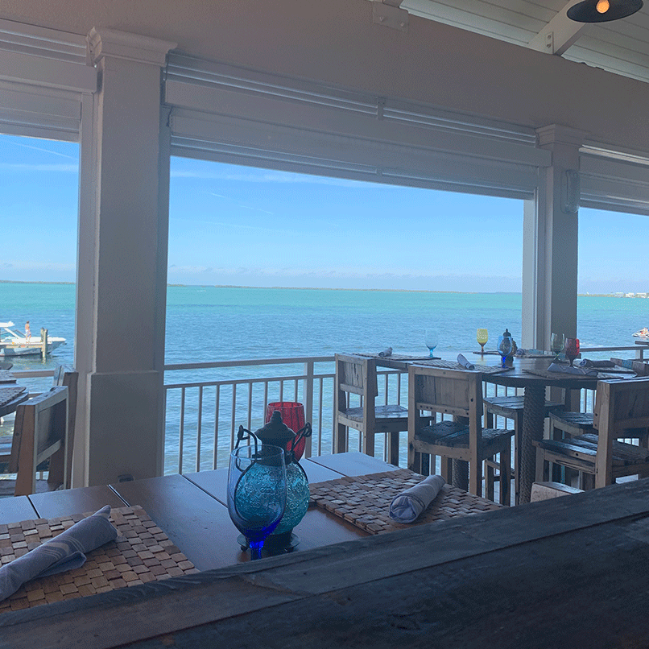

If the picture doesn’t do this place justice I don’t know what will. Any view of Key Largo’s tropical waters is amazing, but this place in particular did it right. Sol by the Sea is the perfect place to go for lunch or dinner, and the space is completely open but covered giving you a beautiful view wherever you look. After you eat, you can walk along the sand or lay in one of the hammocks: a 10/10 experience overall.

Sol by the Sea
Gilberts
Enjoy more waterfront dining at Gilberts. From the front, it just looks like a regular building but from the back they have transformed this place into its own island oasis. Watch boats drive by or if you’re lucky, catch a manatee swimming by the shallow water. One of the amazing things about Gilberts is that they have a special drink menu where they donate money to breast cancer research. A great spot to grab a bite!
Snooks
Because it’s one of my family’s favorites, I felt I could put it on here twice. Amazing food + great outdoor dining = what more could you need? The outdoor seating allows you to enjoy the waterfront views watching boats pass by. The tables are spaced out from one another so you don’t feel too close to the party next to you. Additionally, there is a dock for boats to drive up to, that you can walk on after your meal and look out on the water.
Ocean Reef
This last one is not quite a restaurant, but a private club at the tip of Key Largo. With multiple restaurants to choose from, this place is a must-go destination. My personal favorite restaurant at Ocean Reef is the Islander. Their sushi and fish is prepared fresh each day and there’s always delicious new specials. My favorite thing to get is the melanie roll and side of crab fried rice. You can’t go wrong with any place you choose here!